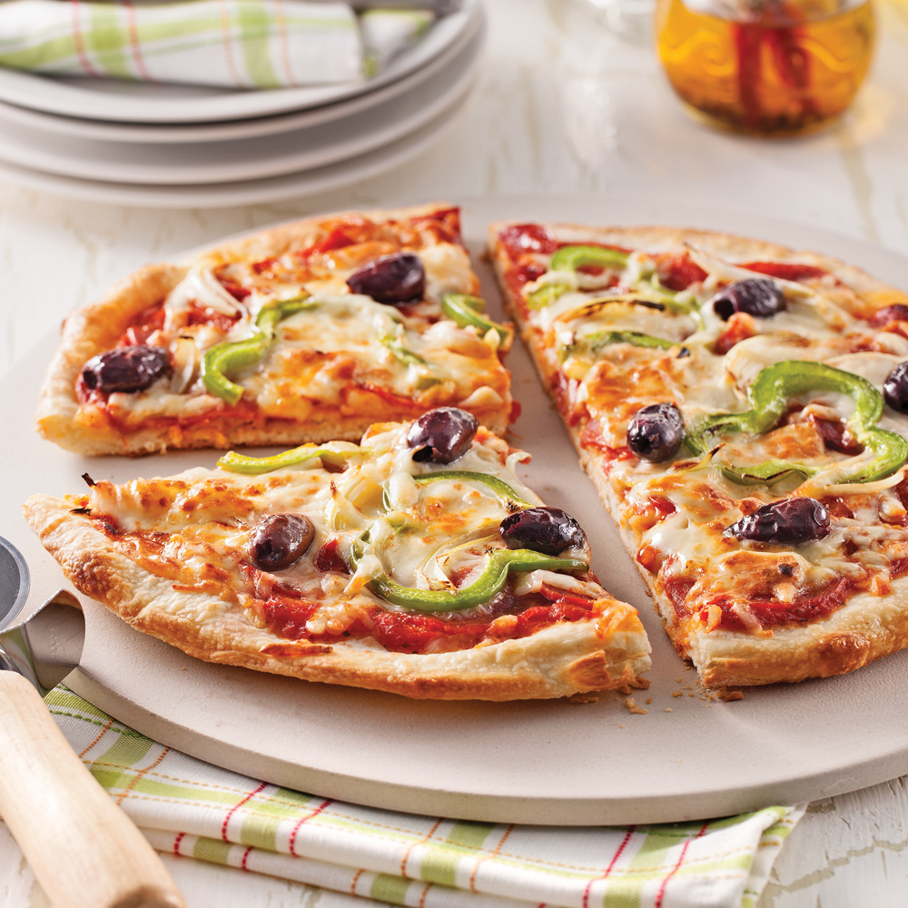

Pizza Maison
Une bonne pizza faite maison avec une pâte moelleuse et tous les ingrédients que t’aimes, c’est ça le kiff.
Ingrédients :
- 250g de farine
- 1 sachet de levure boulangère
- 1 c.à.s d’huile d’olive
- 120ml d’eau tiède
- 100g de sauce tomate
- 100g de mozzarella
- Garniture au choix (jambon, champignons, olives...)
Préparation :
- Mélange la farine, levure, eau, huile. Pétris et laisse reposer 1h.
- Étale la pâte, ajoute la sauce tomate et la garniture.
- Fais cuire à 220°C pendant 15-20 minutes.
← Retour à l'accueil